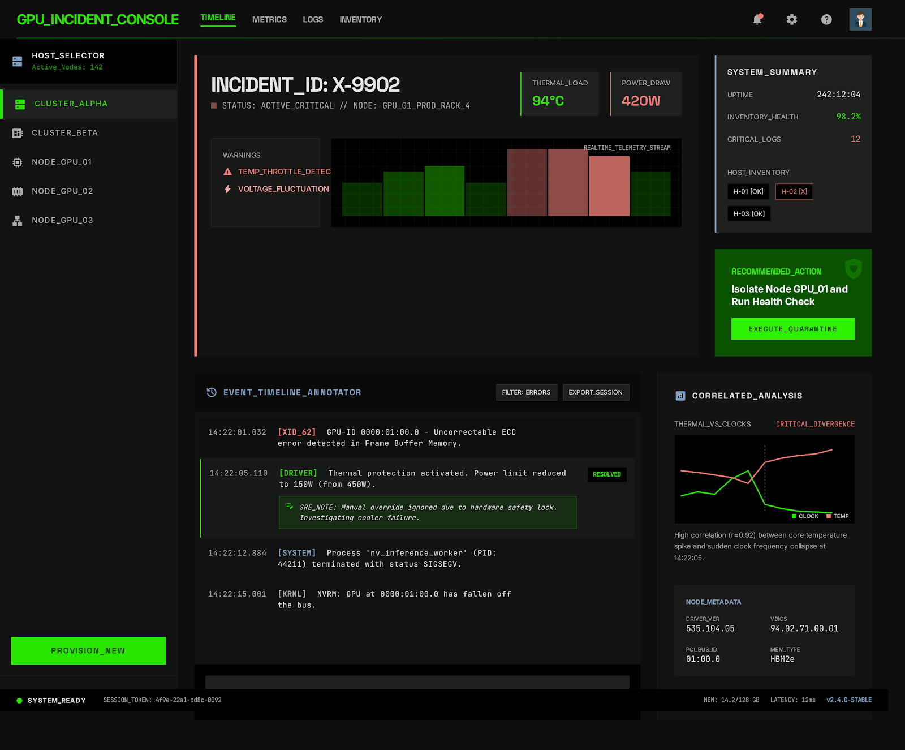

PF SAFE DEMO · 2026-03-09-p002
GPU Incident Timeline Annotator
Turn raw infra events into a readable incident timeline so operators can explain what failed and when.
ingest status
Imported from Stitch exportThe approved Stitch screen now ships through a local PF-safe wrapper for reliable build, preview, and hosting.
- Source preserved as local artifact
- Public demo path avoids remote CDN dependency
- Preview uses the shipped Stitch screen
